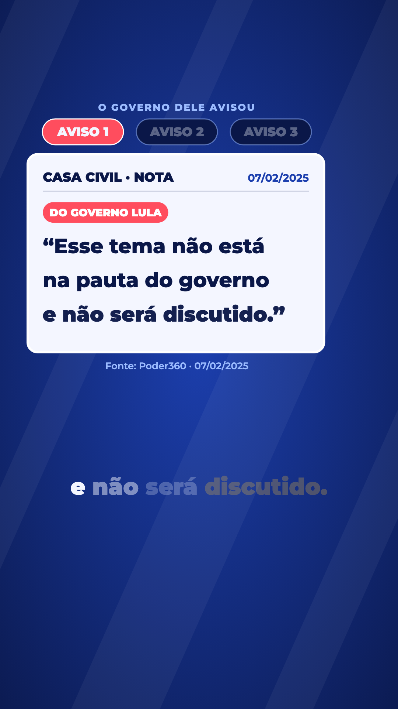
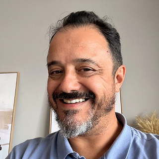
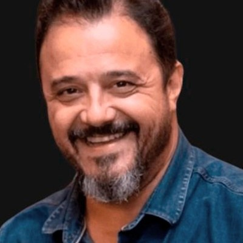

O mesmo lugar para cada coisa em todo vídeo: rótulo em cima, vídeo na largura toda, crédito logo embaixo do vídeo e a legenda abaixo, sempre com folga (a régua pede 20 px; a peça deixa uns 100). O animador só preenche quem é, o trecho, o rótulo e o crédito. As posições respeitam o que o Instagram corta (a régua).
O animador desenhou do zero: o crédito ficou colado na legenda. Daqui saíram 13 dos 16 problemas da régua.
O vídeo dele mudo, por baixo da nossa voz. O título do bloco, se houver, fica sobre a parte de baixo do vídeo, como hoje.
O trecho com a voz dele. O selo ELE DISSE fica no lugar do título, para quem vê sem som saber que é a fala dele.
Em vermelho, o que a régua reprova para texto. Em amarelo, o lugar do título. Nenhum texto da peça cai no vermelho.
Rótulo com o símbolo das bolinhas; crédito com as três cores; um traço nas três cores embaixo da legenda.
O mesmo, com o ELE DISSE. A marca aparece em todo trecho de vídeo, sempre no mesmo lugar.
Os três detalhes um pouco maiores, para ver como ficam.
Entra no primeiro bloco com a sua voz, uns 3 segundos, embaixo da legenda e à esquerda (longe dos ícones do Instagram). Fundo: o bloco 3 do #211.


Sua foto com o anel nas três cores do logo, o nome e, embaixo, o símbolo com INSTITUTO br360 nas cores da assinatura.
Sem fundo e sem borda: foto com o anel, nome e INSTITUTO br360 direto sobre a tela.
Um fio vertical nas cores do logo separa a foto do nome, como assinatura de telejornal.
Foto sem anel; as três cores vão num traço curto embaixo do nome.
Só o nome e a marca, para quando a tela já estiver cheia.
O logo com 30 px de altura (br360 em 30).
Uns 40% maior: símbolo com 42 px, br360 em 42.
Uns 75% maior: símbolo com 52 px, br360 em 52, quase do tamanho do nome.
Sem fundo e sem borda, logo um pouco maior, foto de autor. Entra no primeiro bloco com a sua voz, uns 3 s.

O mesmo, maior.